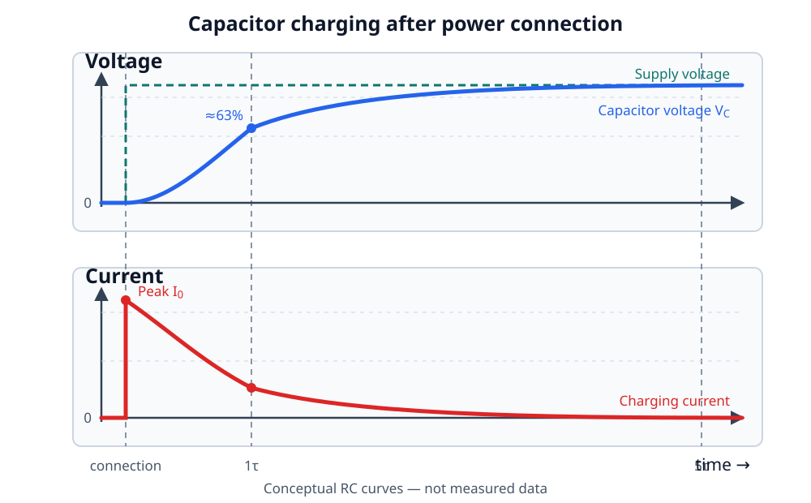

Inrush Current in FPV Power Systems
Connecting a 6S LiPo to an FPV quad can produce a sharp spark at the XT60 and a large, short current pulse. Adding a flight controller, large ESC capacitor, 5 V regulator, companion computer, and USB camera creates several startup events that are related but require different solutions.
This page uses the following example:
| Part | Example |
|---|---|
| Battery | 6S LiPo, 25.2 V when fully charged |
| Flight controllers | iFlight BLITZ ATF435 and DAKEFPV F722 Mini |
| Firmware | Betaflight |
| Companion computer | Radxa ZERO 3W |
| Regulator | Pololu D24V50F5, item 2851, fixed 5 V |
Remove the propellers
Perform every power-on experiment without propellers. A 6S LiPo can deliver destructive current into a wiring error. Start with a current-limited bench supply or smoke stopper when practical, then validate the real battery connection separately.
What is inrush current?
A discharged capacitor initially looks close to a short circuit. When the battery is connected, current flows until the capacitor voltage approaches the battery voltage:
The ideal equation predicts a very large current for an instantaneous voltage step. Real peak current is limited by battery impedance, connector and wire resistance, capacitor ESR and ESL, and any deliberate current limiter.
The charge and stored energy are:
Voltage matters twice in the energy equation. For illustration, charging 1000 µF from 0 V to a full 6S voltage stores:
This is an example, not an assumed value for the installed ESC capacitor.
Voltage and current during charging

At connection time, capacitor voltage cannot change instantly, so current is
highest. As the capacitor charges, its voltage rises toward the supply voltage
and current decays toward zero. For an ideal resistor-capacitor pre-charge,
voltage reaches about 63% after one time constant (τ = R × C) and more than
99% after five time constants. A direct XT60 connection has no intentional
series resistor, so parasitic resistance and inductance produce a much faster,
less controlled pulse than the simplified RC curves.
Three startup events
flowchart TD
A["Connect 6S"] --> B["1. Main-bus inrush"]
B --> C["FC starts"]
C --> D["2. Pololu soft-start"]
D --> E["3. Radxa boot load"]The flow is sequential, but its timescale is not uniform: battery-side inrush can last microseconds to milliseconds, while FC and Radxa boot take much longer. The sections below explain each stage.
1. Battery and ESC inrush
The main ESC capacitor is directly across the battery input. Current begins before the XT60 contacts are fully seated, so the electric field can ionize the small air gap and form an arc. Repeated arcing can pit and oxidize connector surfaces, increasing resistance and heat under flight current.
A normal brief spark is not the same as a sustained short circuit. A violent or continuing arc, smoke, heat, or repeated connector welding is a fault: disconnect power and inspect the build.
2. Regulator output inrush
The Pololu D24V50F5 charges its own output network and the capacitance attached to the 5 V cable. Pololu specifies integrated soft-start, short-circuit, over-temperature, reverse-voltage and under-voltage protection. Soft-start reduces its startup inrush, but it does not eliminate battery-side inrush from the ESC and all other capacitors.
3. Companion-computer boot load
After 5 V appears, the Radxa load changes as its processor, storage, radios and USB devices initialize. This is not purely capacitor inrush. A regulator, connector or cable that cannot support the transient load can produce a 5 V dip, reset the Radxa, or disturb other devices sharing the battery and ground path.
Sequencing the Radxa after the FC separates the two boot events. It cannot fix an undersized regulator, thin cable, poor solder joint or unstable ground path.
Ways to control inrush
| Method | Where it acts | What it solves |
|---|---|---|
| Pre-charge resistor and bypass | Main battery input | Limits initial capacitor current before establishing the full-current path |
| MOSFET soft-start / anti-spark module | Main battery input | Ramps the bus voltage and reduces connector arcing |
| Regulator soft-start | Inside the DC/DC regulator | Controls the regulator output rise |
| Delayed regulator enable | Companion branch | Prevents FC and companion computer from starting simultaneously |
| Low-resistance 5 V wiring | Regulator to computer | Reduces voltage drop during boot-current pulses |
| Local output capacitance | Close to the computer | Supports brief load steps, but adds startup charge and must be validated |
Passive pre-charge
For a resistor R charging capacitance C, the time constant is:
The capacitor reaches about 63% after 1τ and more than 99% after 5τ. Initial
resistor current and power are approximately:
The resistor must survive the pulse energy, and a low-resistance main path must bypass it before motor current flows. A permanent series pre-charge resistor is not a flight-current path.
DarwinFPV anti-spark module example
The DarwinFPV anti-spark filter is an example of a battery-side solution. DarwinFPV describes an RC-controlled, high-current MOSFET soft-start that ramps power before providing a low-resistance flight path. It belongs between the battery connector and the drone power bus.
Treat its current and voltage ratings, cooling, PCB construction and failure behavior as product claims to verify for the actual aircraft. It does not replace the Pololu EN sequencer, and the EN sequencer does not replace an anti-spark device.
A smoke stopper has a different purpose
A smoke stopper limits current while checking a new build for faults. Many are not designed to remain in the power path during flight. An anti-spark circuit controls only the connection transient and then provides a low-resistance high-current path.
Recommended system topology
flowchart LR
BAT["6S LiPo<br/>up to 25.2 V"]
AS["Optional anti-spark<br/>main-bus soft-start"]
STAR["ESC battery pads<br/>star point"]
CAP["ESC bulk capacitor<br/>short leads"]
ESC["4-in-1 ESC"]
FC["Flight controller<br/>Betaflight"]
REG["Pololu D24V50F5<br/>VIN from main bus"]
PI["Radxa ZERO 3W<br/>5 V input"]
BAT --> AS --> STAR
STAR --- CAP
STAR --> ESC --> FC
STAR --> REG -->|"short, low-resistance<br/>5 V + GND pair"| PIThe optional anti-spark stage handles the whole drone's connection transient. The Pololu branch remains connected to the star point, while its EN input delays only the companion-computer startup.
Pololu D24V50F5 enable behavior on 6S
The saved PDF is a Google Search result for D24V30F5. The linked Pololu item 2851 is D24V50F5; do not copy resistor values or EN behavior from a different regulator family.
For D24V50F5, Pololu specifies:
- VIN operating range of 6 V to 38 V;
- an onboard 100 kΩ pull-up from EN to reverse-protected VIN;
- enabled operation when EN is left disconnected; and
- shutdown when EN is driven below 0.6 V.
At full 6S voltage, EN is associated with approximately 25.2 V through its onboard pull-up. Never connect EN directly to a 3.3 V FC GPIO. Driving it high is unnecessary and can destroy or back-power the FC.
Required conceptual interface
flowchart LR
PIN["Betaflight PINIO<br/>3.3 V start event"]
IFACE["Logic interface<br/>protects FC GPIO"]
LATCH["Set-only startup latch<br/>retains ON state"]
HV["6S-tolerant open-drain /<br/>open-collector EN stage"]
EN["Pololu EN"]
INHIBIT["COMPANION INHIBIT<br/>hardware override"]
PIN --> IFACE --> LATCH --> HV --> EN
INHIBIT -->|"force EN low"| ENThis is a behavioral diagram, not a finished schematic. The later circuit design must satisfy all of these requirements:
- Hold EN below 0.6 V from the instant 6S is connected.
- Tolerate 25.2 V plus measured input transients at every EN-facing device.
- Prevent any EN or 6S voltage from reaching the FC GPIO.
- Release EN only after Betaflight initializes the selected PINIO.
- Latch the released state so an FC reset does not power-cycle the Radxa.
- Reset the latch only after main battery removal.
- Let the physical inhibit control override the latch and hold EN low.
- Use the battery/ESC ground as power reference without routing Radxa supply current through an FC ground pad.
Startup only
This design does not provide graceful Linux shutdown, energy hold-up or protection from sudden battery removal. Cutting 6S power can corrupt the Radxa filesystem even when startup sequencing works perfectly.
Betaflight PINIO configuration
Betaflight PINIO is a practical FC-ready proxy: the output changes after the firmware has initialized that resource. It is not a formal health signal and does not prove that every sensor, receiver or UART application is ready.
An inverted PINIO associated with an inactive USER mode can produce the desired physical high start event after initialization. The external hardware must still guarantee companion-off behavior while the MCU pin is floating during reset.
Capture the real board configuration first
Connect each FC to Betaflight Configurator and save this output before changing resources:
Target names, hardware revisions and existing mappings matter more than the marketing name printed on the board.
Generic unused LED-pad pattern
If resource show all reports the unused LED pad as <MCU_PIN>, a clean target
with PINIO slot 1 available can use this pattern:
Here, 129 means inverted push-pull output and box ID 40 is USER1. Leave
USER1 inactive; the resulting physical output after initialization is used as
the latch's start event. Do not assign an AUX range that can later remove power.
This is an example for an otherwise unused first PINIO slot. Preserve existing
array entries and choose a different slot when the target already uses PINIO.
Never copy <MCU_PIN> literally.
iFlight BLITZ ATF435
iFlight identifies the firmware target as IFLIGHT_BLITZ_ATF435 and exposes an
LED pad. Because this AT32 target's live resource mapping has not been captured,
the safe procedure is:
- Confirm
IFLIGHT_BLITZ_ATF435instatus. - Find
LED_STRIPinresource show alland record its MCU pin. - Confirm the LED pad is unused.
- Confirm which PINIO slot is unused.
- Substitute those verified values into the generic pattern.
- Measure the pad during cold boot before connecting the interface.
Do not infer an STM32 resource from another F435 board; the BLITZ uses an AT32F435 MCU.
DAKEFPV F722 Mini
The current standard DAKEFPVF722 target defines:
| Function | MCU pin | Default configuration |
|---|---|---|
| LED strip | PB3 | LED output |
| PINIO1 / USER1 | PA14 | Inverted output (129) |
| PINIO2 / USER2 | PA8 | Inverted output (129) |
The DAKEFPVF722X8 target uses different PINIO pins (PB1 and PB10). The
text “F722 Mini” on the PCB is not sufficient to choose between target maps.
Confirm the actual target and physical pad with status, resource show all,
the board diagram and a meter. Prefer an already exposed, unused PINIO pad; use
the LED-pad remap only when its MCU pin and solder pad are positively identified.
Measurement plan
An ordinary multimeter often averages over the event and can display a steady 5 V while a millisecond dip resets a processor.
Probe points
flowchart LR
P1["CH1: 6S at ESC pads"] --> BUS["Main bus"]
P2["CH2: FC 5 V or 3.3 V"] --> FC["FC boot"]
P3["CH3: Betaflight PINIO"] --> SEQ["Start event"]
P4["CH4: 5 V at Radxa input"] --> RADXA["Radxa boot"]Capture these events separately:
- Battery connection with companion inhibited.
- Betaflight PINIO transition.
- Pololu 5 V rise after EN release.
- Minimum Radxa input voltage during boot.
- Change when the USB camera is attached.
- FC rail behavior during the same sequence.
Use a differential probe, isolated/battery-powered scope, or another measurement arrangement known to be safe for the floating battery system. A bench scope's earth-referenced ground clip can create a destructive short if attached to the wrong point. Never place a normal ground clip on battery positive.
Cable voltage drop
Measure at the Radxa, not only at the regulator:
The 30 cm 5 V cable includes both outgoing and return resistance. A short, known-gauge power pair and sound connectors are as important as regulator current rating.
Bench validation
- Remove all propellers and disconnect the Radxa UART.
- Save the complete Betaflight configuration.
- Verify the chosen pad with a meter or oscilloscope before connecting it.
- Test the inhibit control: FC on, Pololu output off.
- Test at reduced current with a bench supply: FC boots, PINIO changes, EN is released and 5 V rises once.
- Reset only the FC MCU and confirm Radxa 5 V remains present.
- Remove all input power, reconnect it and confirm the sequence resets.
- Repeat at least ten cold starts with the Radxa, then with the USB camera.
- Verify FC USB access, UART communication and absence of Radxa undervoltage.
- Test the optional anti-spark device separately with the real 6S battery.
- Reconnect UART only after both power states are reliable; confirm neither TX line back-powers an unpowered device.
Do not install propellers until power sequencing, failsafe and manual disarming work without assistance from the companion computer.